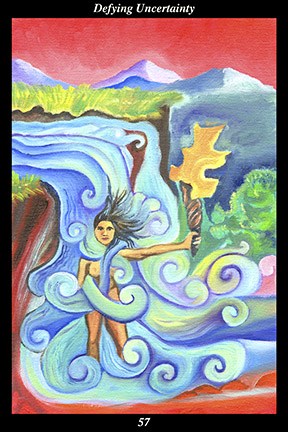

 | IMAGEA female warrior stands in the middle of a great waterfall, holding a lighted torch in a way that protects it from going out. She stands naked in the wilderness, surrounded only by tall mountains and deep valleys, far from the security of home and loved ones. The waterfall’s current takes on the form of continuous speech glyphs in order to show the deafening and unceasing roar of the cascade. |
INTERPRETATION
This hexagram depicts the power of not being swept away by the times. The waterfall symbolizes the uncontrollable momentum of events to which you stand exposed. The torch symbolizes how your attitude and actions affect others. The female warrior symbolizes the sensitivity and loving-kindness that is at the core of inner strength. That she keeps the torch from being extinguished by the torrent of water means that you dwell in a sphere of peace and equilibrium even as crisis and uncertainty rage around you. That she stands naked and alone in the wilderness means that you are unafraid to stand exposed to the elements of change. The deafening and unceasing roar of the cascade symbolizes the universal hymn of change, turbulence, and the unforeseen. Taken together, these symbols mean that you keep the flame of spirit alive by eradicating every self-defeating thought and fearful emotion before they have time to take root.
ACTION
The feminine half of the spirit warrior does not lose faith in the path. Gold must pass through fire before it is pure, the heart must pass through doubt before it is true: just as gold allows itself to be refined by fire, the heart must allow itself to be tested by doubt. When our circumstances are difficult and distressing and impossible to control, then there is only one thing we can control—how we react to our circumstances. When we face an unknown and unpredictable future, then there is only one thing we can know—how we are treating the present. This is neither the time to worry about what might happen nor the time to ruminate on what might have been: put all your past lessons and self-discipline into practice now, sensing your peace of mind and feeling your reverence for the living moment. Let the current of change pass through you and around you and past you and, in the end, only your strong, wise, and loving nature remains. Because you react to troubled times by maintaining an untroubled spirit, you continue to advance where others feel compelled to retreat. Because you trust and revere the present moment, the flame of your faith allows you to continue bringing
benefit to your surroundings.
INTENT
The path of the spirit warrior does not lead to a final destination but, rather, to ever greater levels of understanding and responsibility. This perpetual journey takes us through some difficult terrain, demanding that our understandings be based on personal experience and our responsibilities be fulfilled with heartfelt compassion. Because we cannot bring benefit to another’s need that we have not filled in ourselves, it is necessary to overcome every trial of faith ourselves. Here it is not the strong and unyielding nature of the masculine half of the spirit warrior who endures the ordeal but, rather, the nurturing and open-hearted nature of the feminine half: now is the time to cultivate the inner strength that makes possible outer nurturing by conscientiously eliminating every thought, emotion, and memory that casts doubt on the majesty and grandeur of creation. Allow only your faith in something greater than yourself to flower in the garden of your soul and, inevitably, you emerge with the degree of understanding and power you need to fulfill the next stage of responsibility.
SUMMARY
Although you are close to the prize, things have become more complicated and more difficult than expected. You must embody the principle of resistance and stand against the crushing weight of fear, doubt, and worry longer than expected. Keep the flame of your dream alive and you will have much to celebrate—but let it go out and it will take a long time for you to regain your momentum.
THE LINE CHANGES
1° Not taking warnings seriously, you are neither cautious nor attentive. The dangers are very real and easy to fall into—good advice always sounds like a cliché until the moment it proves true, at which point it’s too late to take. Once again: this is like a tiger trap in the road—just step around it.
2° Communication is blocked because you are echoing the same thing over and over. This is a time to ask yourself what you are not understanding rather than demand the other understand better. Things don’t have to be like this—be patient enough to seek one small improvement at a time.
3° Indecisive one moment, arbitrary the next—this is not the way to acquire a good reputation. If you want to work alongside the best, you must respond to both the immediate and long-range conditions at the same time. Stop trying so hard for a while—watch others and learn from their actions.
4° When your allies stumble they drag you into trouble with them. Thrashing about will not do any good now—maintain your composure and your dignity. There are others who support you and who will clear your name—in time, your actions will vindicate others’ trust in you.
5° The liabilities faced in this situation are daunting—you have done everything possible to prepare for the worst and yet that may not be enough. Now the dice must be thrown—do you go ahead or not? So much is riding on this—if you have doubts, losing face over a delay is the middle path.
6° Can one have penetrating insight and be pessimistic—can one have wisdom and advocate despair? Superficial learning convinces people that the end is approaching—profound learning proves that renewal is always present. Pull your thoughts, emotions, words, and deeds back onto the path.